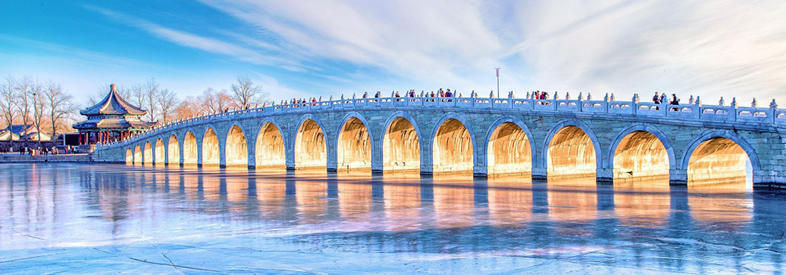

【文明瑰宝】故宫颐和园纯玩一日游
中国现存完整的皇家古建筑群。故宫规模宏伟，布局严整，建筑精美，富丽华贵，在导游的讲解中探秘皇帝的后宫，走进“令妃”居所，一起八卦一下皇帝后宫趣事！细细体味中国传统文化博大精深的底蕴。在雄伟威严的的皇家宫殿里，了解我国灿烂的历史和悠久的文化，寻找故事传说中昔日的辉煌与奢华。
颐和园主要由寿山和昆明湖两部分组成。昆 明湖中，宏大的十七孔桥如长虹偃月倒映水面，蜿蜓曲折的西堤犹如一条翠绿的飘带，萦带南北，横绝天汉，堤上六桥，婀娜多姿， 形态互异；与前湖一水相通的苏州街，更是酒幌临风，店肆熙攘，仿佛置身于 200 多年前皇家买卖街；谐趣园则曲水复廊，足谐其 趣。昆明湖湖岸边：著名的石舫，惟妙惟肖的铜牛，赏春观景的知春亭等景点更是让您犹如人在画中，画在水中…… 散团自由活动。